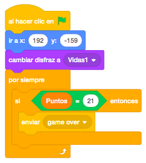
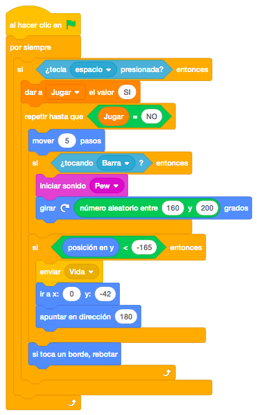
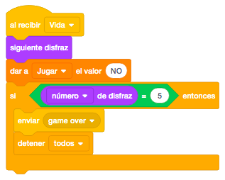
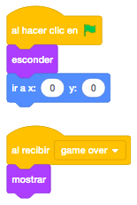
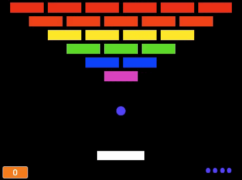

Para este juego necesitaremos el ladrillo del que después haremos clones, la pelota que irá eliminando los ladrillos, la barra que moveremos de izquierda a derecha para lanzar la pelota hacia los ladrillos, las vidas que tenemos en cada momento y un objeto con el literal "Game Over".
Necesitamos un escenario con fondo negro que pintaremos.
Para descargar los objetos necesarios para el juego, lo haremos desde este link. Es un archivo comprimido con 5 objetos. Lo descargaremos y lo descomprimimos en el directorio del alumno.
El juego consiste en una versión sencilla del clásico Arkanoid, en el que la pelota tendrá que rebotar en la
barra que nosotros manejamos y dar en los distintos ladrillos de colores, que irán cambiando de color cada
vez que les demos y se irán eliminando.
Empezaremos por programar los ladrillos. Lo haremos con clones y tendrá esta estructura.

Empezaremos ocultando el objeto original para luego mostrar los clones. Pondremos el primer color de los
ladrillos y lo posicionaremos en la parte superior izquierda.
Repetiremos 6 veces (el número de ladrillos de la primera fila) que cree el clon y se desplace a la derecha
para crear el siguiente.
Ahora lo posicionaremos para crear la siguiente fila y ponemos el siguiente disfraz.
Repetiremos estas operaciones hasta que hagamos la última fila.
Para ver los clones generados, programaremos que al empezar como clon, lo muestre.

Ahora programaremos la barra. Crearemos una variable "Puntos" que inicializaremos a "0" y la posicionaremos
en el centro de la parte inferior.
Le daremos el tamaño del 100% y la mostraremos.
Ahora la moveremos con el cursor derecho y el izquierdo. Al pulsar estas teclas, apuntaremos al lado indicado
y moveremos pasos. Añadiremos al final que si toca un borde, rebote.

Continuaremos con la pelota. la posicionamos en la parte central de la pantalla, apuntaremos hacia abajo y la mostraremos. Esperaremos un segundo para que terminen de pintarse los bloques antes de poder jugar.

Crearemos una variable "Jugar" para determinar si la pelota se tiene que mover o no. Al pulsar espacio, marcaremos la variable con "SI" para indicar que empezamos a jugar. Moveremos la pelota hasta que dicha variable contenga el valor "NO".

Vamos a añadir ahora que si toca la barra, rebote. Controlaremos que si toca la barra, giraremos una cantidad de grados para que pueda ir en sentido contrario pero pondremos una franja aleatoria para que nunca sea el mismo tipo de movimiento.

Volvemos con los ladrillos. Ahora programaremos el bloque "Al Comenzar Como Clon". Añadiremos un bucle "Por
Siempre" donde controlaremos si tocamos la pelota. Si es así, enviaremos un mensaje "Giro Pelota" para que
la pelota gire y que recibiremos en la pelota.
Controlaremos que si el disfraz es el último, haremos un sonido, sumaremos un punto y eliminaremos el clon.
Si no lo es, haremos otro sonido distinto, pondremos el siguiente disfraz y esperaremos un momento.

Ahora terminaremos de programar la barra para que al ir sumando puntos, la barra vaya encogiendo para ir haciendo el juego más complicado. Añadiremos al bucle que si los puntos llegan a una cantidad, la barra disminuye al 60% y que si llegan a otra cantidad mayor, disminuye al 40%.

A continuación programaremos en la pelota, que al recibir el mensaje "Giro Pelota", la pelota gire unos grados aleatorios entre 160 y 200 grados.

Añadimos un nuevo bloque, el de las vidas. Colocamos el objeto el la esquina inferior derecha y ponemos el primer disfraz con todas las vidas. Ahora controlaremos continuamente, que si llegamos al máximo de puntos, mandamos un mensaje de "Game Over".

Vamos a terminar de programar la pelota. Vamos a añadir en el bucle de movimiento de la pelota que si la pelota no la damos con la barra (la posición de la pelota es más baja que la barra), la volveremos a colocar en su posición inicial, apuntaremos hacia arriba y enviaremos un mensaje "Vida" para quitar una vida.

En el objeto "Vidas" programaremos que al recibir el mensaje "Vida", pondremos el siguiente disfraz con una
vida menos, Daremos a la variable "Jugar el valor "NO" que indica que dejamos de jugar hasta que volvamos a
pulsar la tecla "Espacio".
Si el disfraz que ponemos es el último, habremos terminado la partida y enviaremos un mensaje de "Game Over"
y detendremos el juego.

Terminaremos con el último objeto, el "Game Over", donde programaremos que lo escondemos y colocamos en la pantalla inicialmente y que al recibir el mensaje "Game Over" lo mostramos.

Por ultimo, programaremos también que al recibir "Game Over" en la pelota, la esconderemos.
Otro reto que podemos hacer es que aleatoriamente al eliminar un ladrillo, que caiga una vida y si la cogemos añadimos una vida a las que tenemos.
Y el juego quedaría así.

Para ver el juego terminado pulsa
aquí.
Para descargarte el juego terminado pulsa
aquí.